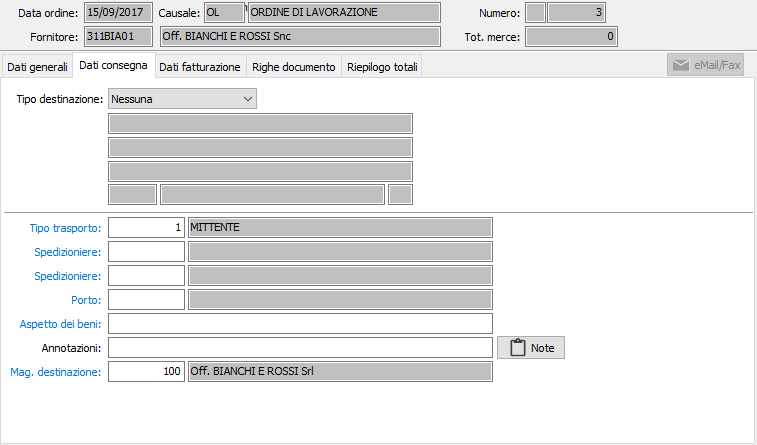

Dati consegna
La sezione video dati di consegna consente l’inserimento delle istruzioni di consegna. E’ situata in questa posizione perché la compilazione automatica di alcuni campi della successiva linguetta dati di fatturazione può essere influenzata dal contenuto dell’eventuale Destinazione qui indicata.
Si ricorda infatti che la tabella destinazioni dei fornitori non contiene soltanto l’indirizzo, ma può contenere anche modalità di pagamento, domiciliazione bancarie diversi rispetto a quelli presenti nell’anagrafica del fornitore intestatario dell’ordine.
In questo caso, i corrispondenti campi della finestra video dati di fatturazione vengono compilati con le informazioni presenti in anagrafica destinazioni anzichè con quelli presenti in anagrafica del fornitore intestatario.

TIPO DESTINAZIONE: combo box per attivare l’eventuale inserimento di una destinazione e, in caso positivo, per indicare se la destinazione è presente in anagrafica destinazioni diverse o meno. Valori ammessi:
Nessuna: confermando, vengono ignorate tutte le informazioni relative alla destinazione.
Libera: confermando, si passa alla descrizione di una destinazione occasionale.
Codificata: confermando, si passa al campo codice per scegliere una destinazione memorizzata per il fornitore.
CODICE: codice numerico della destinazione, associata al fornitore, a cui deve essere consegnato il prodotto ordinato. Il campo è visualizzato e significativo solo se il campo precedente ha il valore codificato. Sul campo sono attive le funzioni di ricerca (F9) ed accesso rapido (CTRL+W) per eventuali nuovi inserimenti o variazioni. A conferma, viene visualizzata la ragione sociale e l’indirizzo di destinazione.
DESTINAZIONE DIVERSA 1: campo alfanumerico di 50 caratteri, abilitato solo nel caso in cui il campo tipo destinazione contiene il valore Libera, per descrivere la destinazione diversa.
DESTINAZIONE DIVERSA 2: campo alfanumerico di 50 caratteri, abilitato solo nel caso in cui il campo tipo destinazione contiene il valore Libera, per descrivere la destinazione diversa.
INDIRIZZO: campo alfanumerico di 50 caratteri abilitato, solo nel caso in cui il campo tipo destinazione contiene il valore Libera, per descrivere l’indirizzo della destinazione diversa.
CAP, LOCALITÀ, PROVINCIA: campi alfanumerici di 3, 50 e 2 caratteri, abilitati solo nel caso in cui il campo tipo destinazione contiene il valore Libera, per inserire i corrispondenti dati della destinazione diversa.
TIPO TRASPORTO: codice numerico presente nella tabella tipi di trasporto per definire le modalità di trasporto. Viene proposto, se presente, il codice esistente in anagrafica del fornitore. Sul campo sono attive le funzioni di ricerca (F9) ed accesso rapido alla tabella (CTRL+W).
SPEDIZIONIERE 1: eventuale codice del primo spedizioniere, in caso di trasporto a mezzo vettore. Viene proposto, se presente, il codice esistente in anagrafica del fornitore. Sul campo sono attive le funzioni di ricerca (F9) ed accesso rapido alla tabella (CTRL+W).
SPEDIZIONIERE 2: eventuale codice del secondo spedizioniere, in caso di trasporto a mezzo vettore. Viene proposto, se presente, il codice esistente in anagrafica del fornitore. Sul campo sono attive le funzioni di ricerca (F9) ed accesso rapido alla tabella (CTRL+W).
CODICE PORTO: eventuale codice delle modalità di porto. Viene proposto, se presente, il codice esistente in anagrafica del fornitore. Sul campo sono attive le funzioni di ricerca (F9) ed accesso rapido alla tabella (CTRL+W).
ASPETTO DEI BENI: campo alfanumerico per l’eventuale descrizione sintetica dell’aspetto dei beni. Sul campo sono attive le funzioni di ricerca (F9) ed accesso rapido alla tabella (CTRL+W).
ANNOTAZIONI: campo alfanumerico per eventuali annotazioni relative al trasporto.
NOTE CONSEGNA: campo note per eventuali note di consegna, stampabili sul modulo dell'ordine se previsto.
MAGAZZINO DESTINAZIONE: indica il magazzino del fornitore dove deve essere caricata la merce; il campo è obbligatorio e deve essere un magazzino su cui è impostato il fornitore intestatario dell'ordine.